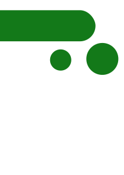
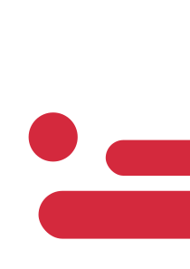
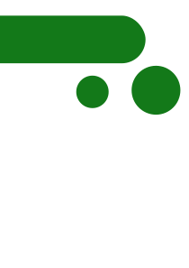
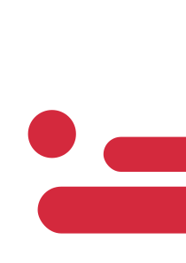
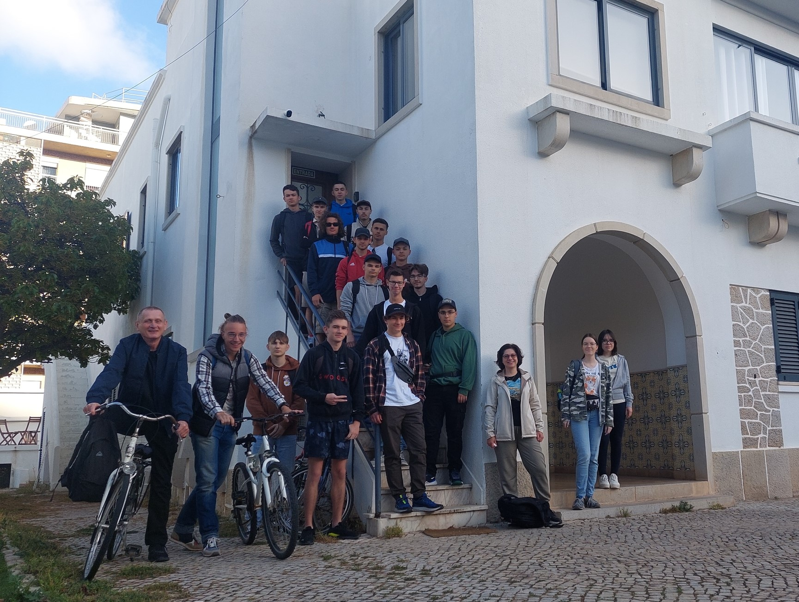
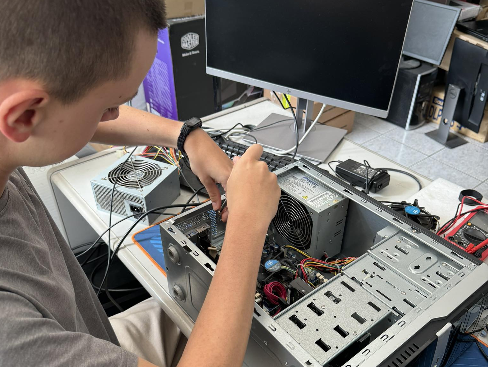
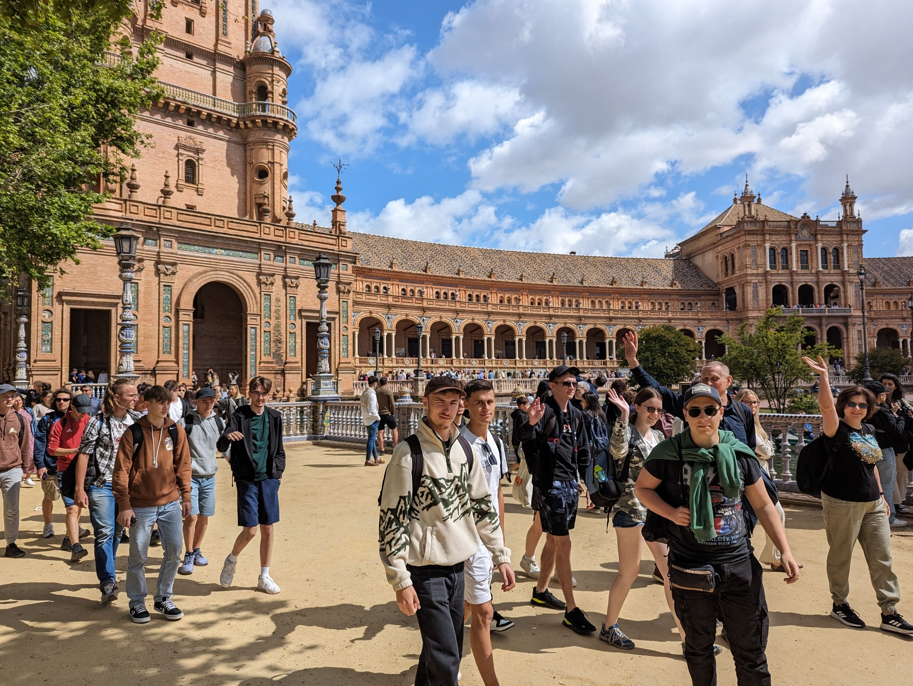

Opis projektu

nowe doświadczenia

integracja

praktyki zawodowe

zwiedzanie i wycieczki
Projekt UE Erasmus+ nr 2023-1-PL01-KA121-VET-000116641 ukierunkowany był na potrzeby zwiększenia szans zatrudnienia absolwentów Zespołu Szkól Elektronicznych. Celem projektu było kształtowanie zawodowych i społecznych postaw uczniów ZSE w obszarze europejskim w tym dostosowanie szkoleń zawodowych do obecnych wymagań rynku pracy oraz podniesienie efektywności szkolenia zawodowego poprzez szkolenia zawodowe nauczycieli przedmiotów informatycznych i elektronicznych w zagranicznych instytucjach szkoleniowych i firmach.
W ramach projektu 19 uczniów Zespołu Szkół Elektronicznych w Rzeszowie odbyło 3 tygodniową praktykę zawodowa w instytucjach szkoleniowych i firmach w sektorze IT, elektroniki i automatyki w portugalskich zakładach pracy. Organizacją przyjmującą uczniów była firma WakeUp Projects w Faro na południu Portugalii.
Celem projektu było zapoznanie z portugalskim system kształcenia, zapoznanie ze strukturą organizacyjną firm zatrudniających specjalistów w branży autmatyki, elektronicznej i informatycznej, doskonalenie umiejętności językowych, wymiana doświadczeń z innymi trenerami w dziedzinie szkolnictwa zawodowego, zapoznanie z organizacją zewnętrznych egzaminów zawodowych, z treścią programową przedmiotów zawodowych, innowacyjnymi metodami i technikami prowadzenia szkoleń zawodowych, a także zapoznanie ze środkami dydaktycznymi i sposobami ich wykorzystania w procesie kształcenia.
Praktyki dla uczniów były organizowane w 6 portugalskich firmach: BPGame, IQreative, iHome, CombiTecnic, Clube do Hardware oraz Sabit, które posiadają duże doświadczenie w szkoleniu specjalistów z zakresu współczesnych technologii oraz przeprowadzaniu wymiany i stażu w ramach projektów UE. 19-osobowej grupie uczniów towarzyszyło 4 nauczycieli/opiekunów.
Uczniowie odbywający praktykę zagraniczną w ramach projektu zdobyli wiedzę oraz aktualne i poszukiwane przez pracodawców doświadczenie, które są ważnym atutem w znalezieniu pracy nie tylko w naszym regionie.